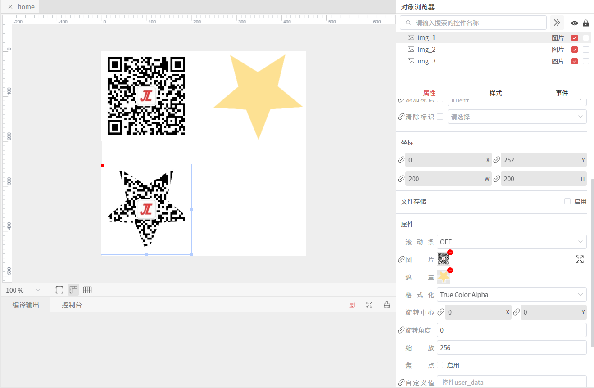
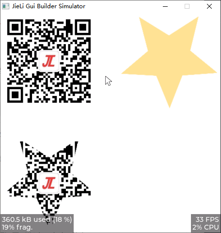

图片
图片控件用于显示图片资源，支持图片遮罩、缩放等功能。
预览
属性
| Property | Description |
|---|---|
| Image | 图片 |
| Mask | 图片遮罩 |
| Use Fs | 文件存储，是否启用文件存储，不启用则使用C数组方式存储资源 |
| Color Format | 格式化颜色 |
| Pivot | 旋转中心 |
| Rotate | 旋转角度 |
| Zoom | 缩放比例， 256为原始大小，512为2倍大小 |
这是两个使用了相同图片源的图片控件，一个使用文件存储，一个不使用文件存储
提示
- 当图片不启用文件存储时，图片资源会被转换成控件大小的图片C数组，存储在generated/gui_images目录下
- 当控件设置了
Zoom属性时，图片会根据设置的缩放比例进行缩放，但并不会改变控件的尺寸
样式
| Style | Part | Description |
|---|---|---|
| Image Recolor | Main | 图片遮罩颜色 |
| Image Recolor Opaque | Main | 图片遮罩颜色，不透明 |
| Opaque | Main | 图片透明度 |
下图中左图的图片控件没有做图片遮罩的处理，右边的图片控件，使用了#1AE3F3颜色，透明度为56%的遮罩处理，同时设置了图片透明度为100
控件支持的绑定属性
| Property | Type | Description | Sync Mode |
|---|---|---|---|
| Image | char * / res image id | OneWayModelToView | |
| Pivot | int32_t | OneWayModelToView | |
| Rotate | int32_t | OneWayModelToView |
提示
图片控件的图片资源除了可以使用char *类型的资源路径外，还可以使用res image id类型的资源ID，具体使用参见实现图片绑定更新
使用
启用图片遮罩
这里准备了两种图片，一个是 二维码 图片，另外一个是 透明背景 的 五角星 图片。 新增三个图片控件，左上角设置 二维码 图片，右上角设置 五角星 图片，左下角设置 二维码 图片，并设置了 五角星 图片作为遮罩。

从仿真结果看出，左下角的图片控件使用了 五角星 图片作为遮罩，显示出了 五角星 形状的图片。

提示
当图片控件设置了 缩放、旋转 等属性时，改变了图片的显示效果，但图片遮罩的位置、尺寸并不会随着变化。